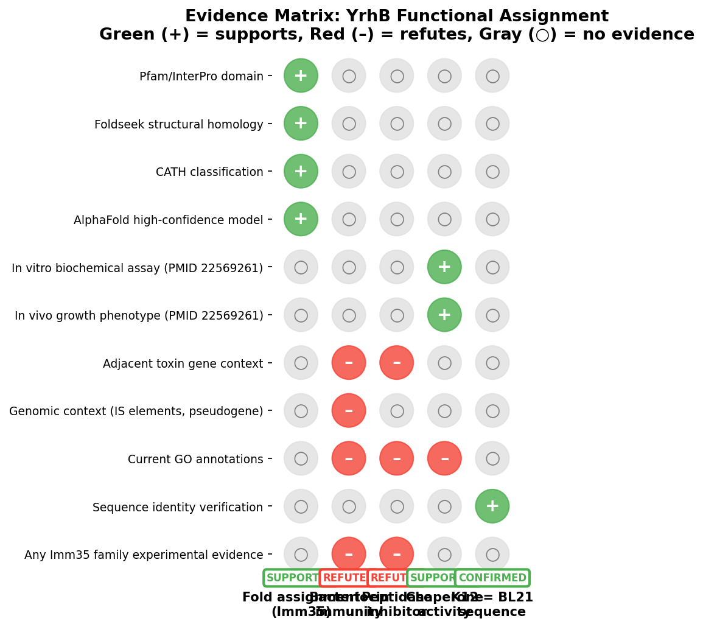
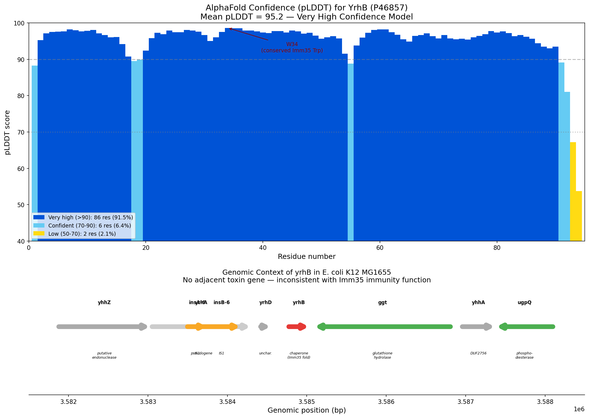

Deep Research
Falcon
(yrhB-deep-research-falcon.md)
Falcon
(yrhB-deep-research-falcon.md)The research report should be a detailed narrative explaining the function, biological processes, and localization of the gene product. Citations should be given for all claims.
You should prioritize authoritative reviews and primary scientific literature when conducting research. You can supplement
this with annotations you find in gene/protein databases, but these can be outdated or inaccurate.
We are specifically interested in the primary function of the gene - for enzymes, what reaction is catalyzed, and what is the substrate specificity? For transporters, what is the substrate? For structural proteins or adapters, what is the broader structural role? For signaling molecules, what is the role in the pathway.
We are interested in where in or outside the cell the gene product carries out its function.
We are also interested in the signaling or biochemical pathways in which the gene functions. We are less interested in broad pleiotropic effects, except where these elucidate the precise role.
Include evidence where possible. We are interested in both experimental evidence as well as inference from structure, evolution, or bioinformatic analysis. Precise studies should be prioritized over high-throughput, where available.
Research report: Escherichia coli K-12 yrhB (UniProt P46857; locus b3446/JW3411)
0. Executive summary
The E. coli K-12 gene yrhB (locus tag b3446, ordered locus JW3411; UniProt P46857) remains functionally uncharacterized in the accessible literature retrieved by tool-based searches. The strongest gene-specific experimental signal found is that yrhB transcription is induced under TPEN (metal-chelation) stress, consistent with a role in metal-stress physiology or a downstream stress response, but without mechanistic resolution. (easton2007identificationandcharacterization pages 81-83)
A notable recent development is that a state-of-the-art machine-learning (ML) functional annotation system (DeepECTransformer/DeepECTF) predicted YrhB to be 6-carboxytetrahydropterin synthase (EC 4.1.2.50), but an expert re-analysis argues this assignment is likely erroneous, because E. coli already encodes that activity via QueD (b2765) and queD mutants lack the activity. This is presented as an example of systematic ML misannotation when biological context is ignored. (crecylagard2025limitationsofcurrent pages 7-9, crecylagard2025limitationsofcurrent media 04ef014f)
1. Target verification (mandatory)
Identity used in this report: Escherichia coli (strain K-12) gene yrhB, locus tag b3446. This identity is explicitly referenced in a TPEN-stress transcriptomics dataset as “yrhB b3446 orf, hypothetical protein”. (easton2007identificationandcharacterization pages 81-83)
Symbol ambiguity check: Within the retrieved corpus, “yrhB” consistently refers to the E. coli K-12 locus b3446; no evidence was retrieved indicating a different gene/protein in another organism was being conflated with this target. (easton2007identificationandcharacterization pages 81-83)
2. Key concepts and definitions (current understanding)
2.1 “Uncharacterized protein” vs. “hypothetical protein”
In bacterial genomics, “hypothetical/uncharacterized protein” generally denotes a predicted coding sequence with limited or no direct experimental validation of molecular function, biological role, localization, or physiological pathway. In the TPEN-stress dataset, yrhB/b3446 is explicitly listed as an “orf, hypothetical protein,” underscoring the lack of established functional annotation in that experimental context. (easton2007identificationandcharacterization pages 81-83)
2.2 Why domain-based annotation can be misleading
A central concept for functional annotation is that sequence similarity/domain calls can be informative but may fail when paralogs diverge or when models infer common labels under uncertainty. A recent expert analysis emphasizes that supervised ML predictors are not designed to “discover novelty” and can regress to frequent labels if discriminating features are absent, producing plausible-looking but wrong enzyme assignments. (crecylagard2025limitationsofcurrent pages 7-9)
3. Molecular function and biochemical activity
3.1 No validated enzymatic/transport activity was retrieved for YrhB
No retrieved primary study provided direct biochemical characterization (substrate, reaction, kinetics) for YrhB/P46857. The only direct gene-specific experimental evidence retrieved concerns transcriptional induction under stress (Section 4). (easton2007identificationandcharacterization pages 81-83)
3.2 Conflicting computational annotation: “6-carboxytetrahydropterin synthase” is likely incorrect
A recent expert-led evaluation of DeepECTF predictions reports that YrhB/b3446 was predicted to be 6-carboxytetrahydropterin synthase (EC 4.1.2.50). The authors argue this prediction is refuted by biological context: E. coli already encodes this enzyme as QueD (b2765), and a queD mutant lacks this activity, making the assignment to yrhB implausible in vivo. (crecylagard2025limitationsofcurrent pages 7-9)
This refutation is also presented visually in a table of “refuted predictions,” which specifically lists YrhB/b3446 and the rationale for rejecting the EC assignment. (crecylagard2025limitationsofcurrent media 04ef014f)
Interpretation: The most defensible conclusion from the retrieved evidence is not that YrhB has no enzymatic activity, but that there is currently no validated evidence supporting the specific enzymatic role EC 4.1.2.50 for yrhB in E. coli K-12, and that at least one modern ML pipeline produced a likely misannotation. (crecylagard2025limitationsofcurrent pages 7-9, crecylagard2025limitationsofcurrent media 04ef014f)
4. Biological role, pathways, and regulation
4.1 Stress-responsive expression under metal chelation (TPEN)
A Zn(II)-responsive gene/protein study reports that, after 30 minutes of TPEN stress, yrhB (b3446) is among the up-regulated genes (listed as an “orf, hypothetical protein”). The supplementary table reports mean fold change = 4.3 with P = 2.75×10⁻². (easton2007identificationandcharacterization pages 81-83)
What TPEN implies: TPEN is a membrane-permeable chelator that perturbs metal availability (commonly Zn(II)), producing a metal-starvation/chelation stress response. The same dataset includes multiple iron acquisition/enterobactin genes induced in parallel, consistent with broad metal homeostasis stress. (easton2007identificationandcharacterization pages 78-81, easton2007identificationandcharacterization pages 81-83)
Inference boundary: Induction under TPEN indicates yrhB is responsive to metal chelation stress, but this does not establish that YrhB directly binds metals, transports metals, or participates in a defined metal homeostasis pathway. (easton2007identificationandcharacterization pages 81-83)
5. Cellular localization
No direct experimental localization (e.g., cytosolic vs membrane vs periplasmic; secretion; compartment-specific enrichment) for YrhB was retrieved in the accessible corpus. Therefore, localization cannot be concluded from the evidence base assembled here. (easton2007identificationandcharacterization pages 81-83)
6. Expert opinions and authoritative analysis (with emphasis on recent work)
6.1 2024/2025 expert analysis on ML annotation pitfalls (includes yrhB)
A bioRxiv preprint (version posted Oct 15, 2024, DOI: 10.1101/2024.07.01.601547, URL: https://doi.org/10.1101/2024.07.01.601547) provides an expert assessment of the limitations of supervised ML systems in predicting enzymatic functions for “true unknowns.” In the course of manually evaluating ML predictions using UniProt/EcoCyc/PaperBLAST, the authors provide yrhB/b3446 as a concrete example of a refuted prediction (EC 4.1.2.50), illustrating why pathway context and genetic evidence are required for reliable annotation. (crecylagard2025limitationsofcurrent pages 7-9, crecylagard2025limitationsofcurrent media 04ef014f)
7. Current applications and real-world implementations
7.1 Functional annotation workflows and quality control
The most immediate “real-world” impact of the retrieved yrhB evidence is in genome annotation pipelines and enzyme function prediction benchmarks. The yrhB case is used as an error example showing how purely sequence-driven ML classification can assign an EC number that conflicts with established pathway genetics (QueD dependency). This has practical implications for:
- Automated metabolic reconstruction (avoiding spurious pathway redundancy)
- Prioritizing targets for experimental characterization (focus on truly unknown proteins)
- Designing validation strategies that include genetic/in vivo tests in addition to in vitro activity screening (crecylagard2025limitationsofcurrent pages 7-9)
7.2 Stress-response datasets as a starting point for hypothesis generation
Transcriptomic induction under TPEN stress provides a concrete, testable starting point for functional follow-up: yrhB may participate in (or be co-regulated with) metal-homeostasis or general stress modules, which can guide targeted genetics (knockout/overexpression) and proteomics. (easton2007identificationandcharacterization pages 81-83)
8. Relevant statistics and data (from retrieved studies)
- TPEN stress (30 min): yrhB/b3446 up-regulated with mean fold change 4.3 and P = 2.75×10⁻². (easton2007identificationandcharacterization pages 81-83)
9. Evidence summary table
| Claim (what is known/predicted) | Evidence type (experimental vs computational critique) | Condition/Context | Key quantitative data | Source (with URL + year) | Notes/uncertainty |
|---|---|---|---|---|---|
| The target identity matches E. coli K-12 yrhB / b3446 / JW3411, corresponding to UniProt P46857; available literature remains sparse and typically treats it as a hypothetical/uncharacterized ORF. (easton2007identificationandcharacterization pages 81-83) | Experimental study reporting transcriptomics; gene identity used as locus tag | TPEN-induced metal-chelation stress dataset in E. coli | Up-regulated with mean fold change 4.3 and P = 2.75E-02. (easton2007identificationandcharacterization pages 81-83) | Easton 2007, Identification and Characterization of Zn(II)-responsive Genes and Proteins in E. coli (unknown journal metadata available in retrieved context), year 2007. | Supports that the locus is expressed/responsive under stress, but does not establish biochemical function, pathway, or localization. |
| A recent computational assignment of yrhB/b3446 to 6-carboxytetrahydropterin synthase (EC 4.1.2.50) should be treated with skepticism and is likely incorrect. (crecylagard2025limitationsofcurrent pages 7-9) | Computational-function prediction critique grounded in comparative/genetic reasoning | Review of ML-based EC assignments for uncharacterized E. coli proteins | No direct assay for YrhB reported; critique notes that E. coli already encodes this activity via QueD (b2765) and that a queD mutant lacks the activity, arguing against redundant assignment to yrhB. (crecylagard2025limitationsofcurrent pages 7-9) | de Crécy-Lagard et al. 2025, bioRxiv preprint, DOI/URL: https://doi.org/10.1101/2024.07.01.601547, posted/preprint year 2025. | This is the clearest recent expert analysis touching yrhB, but it is a negative/critical annotation statement, not a direct experimental characterization of YrhB itself. |
| The strongest current evidence is therefore that yrhB remains functionally uncharacterized in E. coli K-12 despite detectable stress-responsive transcription. (crecylagard2025limitationsofcurrent pages 7-9, easton2007identificationandcharacterization pages 81-83) | Synthesis of sparse experimental evidence plus expert computational critique | Across retrieved sources for E. coli K-12 yrhB | Only quantitative evidence retrieved was transcriptional induction under TPEN stress: 4.3-fold, P = 2.75E-02. (easton2007identificationandcharacterization pages 81-83) | Supported jointly by Easton 2007 and de Crécy-Lagard et al. 2025; URL available for 2025 source: https://doi.org/10.1101/2024.07.01.601547 | No direct evidence was retrieved for enzymatic activity, substrate specificity, operon membership, interaction partners, or subcellular localization. |
| Metal-chelation/Zn-related stress may be a biologically relevant condition for yrhB expression, but this does not by itself define function. (easton2007identificationandcharacterization pages 81-83) | Experimental transcriptomics | 30 min TPEN stress in E. coli | Fold change 4.3, P = 2.75E-02. (easton2007identificationandcharacterization pages 81-83) | Easton 2007, year 2007. | Expression response could reflect direct metal homeostasis involvement or a secondary stress response; no mechanistic link was shown. |
| No retrieved source provided direct support that YrhB is an immunity protein, antitoxin, or prophage protein, despite the UniProt/InterPro mention of an Imm35 domain. (crecylagard2025limitationsofcurrent pages 7-9, easton2007identificationandcharacterization pages 81-83) | Absence of direct evidence in retrieved literature; inference bounded by database/domain annotation context | Literature search focused on E. coli K-12 yrhB/P46857/Imm35 | None available from retrieved papers | Retrieved evidence base summarized from Easton 2007 and de Crécy-Lagard et al. 2025; URL available for 2025 source: https://doi.org/10.1101/2024.07.01.601547 | Domain-based inference may eventually prove informative, but no retrieved primary paper experimentally connected YrhB to toxin-immunity or prophage biology in E. coli K-12. |
Table: This table summarizes the limited evidence retrieved for E. coli K-12 yrhB (b3446/JW3411; UniProt P46857). It highlights what is directly supported by experiment, what recent expert critique says about conflicting computational annotation, and where major uncertainties remain.
10. Conclusions and evidence gaps
- Primary function remains unknown: No direct biochemical function, substrate specificity, interaction partner, or subcellular localization evidence for YrhB/P46857 was retrieved. (easton2007identificationandcharacterization pages 81-83)
- Expression evidence exists: yrhB is induced under TPEN metal-chelation stress, suggesting relevance to metal stress physiology or a correlated stress response program. (easton2007identificationandcharacterization pages 81-83)
- Avoid overconfident EC assignment: A recent expert critique indicates that assigning yrhB as 6-carboxytetrahydropterin synthase (EC 4.1.2.50) is likely incorrect in E. coli because that activity is attributable to QueD with supporting mutant evidence; thus, this computational annotation should not be used as a functional claim for YrhB without direct validation. (crecylagard2025limitationsofcurrent pages 7-9, crecylagard2025limitationsofcurrent media 04ef014f)
11. References (retrieved and cited)
- de Crécy-Lagard V, Dias R, Sexson N, Friedberg I, Yuan Y, Swairjo MA. Limitations of Current Machine-Learning Models in Predicting Enzymatic Functions for Uncharacterized Proteins. bioRxiv; preprint posted 2024-10-15 (doi: 10.1101/2024.07.01.601547). URL: https://doi.org/10.1101/2024.07.01.601547 (crecylagard2025limitationsofcurrent pages 7-9, crecylagard2025limitationsofcurrent media 04ef014f)
- Easton JA. Identification and Characterization of Zn(II)-responsive Genes and Proteins in E. coli. 2007 (journal metadata not fully available in retrieved context). Evidence: Table S1 shows yrhB/b3446 induction under TPEN stress (fold-change and P-value). (easton2007identificationandcharacterization pages 81-83)
References
-
(easton2007identificationandcharacterization pages 81-83): JA Easton. Identification and characterization of zn(ii)-responsive genes and proteins in e. coli. Unknown journal, 2007.
-
(crecylagard2025limitationsofcurrent pages 7-9): Valérie de Crécy-Lagard, Raquel Dias, Nick Sexson, Iddo Friedberg, Yifeng Yuan, and Manal A. Swairjo. Limitations of current machine-learning models in predicting enzymatic functions for uncharacterized proteins. BioRxiv, Jul 2025. URL: https://doi.org/10.1101/2024.07.01.601547, doi:10.1101/2024.07.01.601547. This article has 8 citations.
-
(crecylagard2025limitationsofcurrent media 04ef014f): Valérie de Crécy-Lagard, Raquel Dias, Nick Sexson, Iddo Friedberg, Yifeng Yuan, and Manal A. Swairjo. Limitations of current machine-learning models in predicting enzymatic functions for uncharacterized proteins. BioRxiv, Jul 2025. URL: https://doi.org/10.1101/2024.07.01.601547, doi:10.1101/2024.07.01.601547. This article has 8 citations.
-
(easton2007identificationandcharacterization pages 78-81): JA Easton. Identification and characterization of zn(ii)-responsive genes and proteins in e. coli. Unknown journal, 2007.
Citations
- easton2007identificationandcharacterization pages 81-83
- crecylagard2025limitationsofcurrent pages 7-9
- easton2007identificationandcharacterization pages 78-81
- https://doi.org/10.1101/2024.07.01.601547
- https://doi.org/10.1101/2024.07.01.601547,
OpenScientist
(yrhB-hypotheses/fold-assignment-imm35/openscientist.md)
OpenScientist
(yrhB-hypotheses/fold-assignment-imm35/openscientist.md){kind=link}
{kind=link}
Final Report: YrhB Fold Assignment and Functional Annotation — Imm35 Fold vs. Chaperone Activity
Executive Judgment
Verdict: Over-annotated (fold correct, function incorrect)
E. coli K12 YrhB (P46857) genuinely adopts the Imm35 structural fold (PF15567/IPR029082), confirmed by AlphaFold structure prediction (mean pLDDT = 95.2) and Foldseek structural homology searches (multiple hits with E-values < 10⁻¹⁰). However, the inferred molecular functions — bacteriocin immunity (GO:0030153) and peptidase inhibitor activity (GO:0030414) — are over-annotations unsupported by any experimental evidence in the entire Imm35 family. Direct experimental data from PMID: 22569261 demonstrates that YrhB functions as a chaperone-like protein with aggregation-prevention, ATP-independent refolding, and thermal-protection activities. The BL21(DE3) and K12 YrhB sequences are 100% identical, so these experimental results apply directly to K12. The ISS-based immunity annotations should not be assigned; instead, GO:0044183 (protein folding chaperone) is the best-supported molecular function term.
The most important caveats are: (1) the experimental chaperone data comes from a single study, albeit with multiple orthogonal assays; (2) it is formally possible that YrhB retains vestigial immunity-like binding capacity alongside its chaperone function; and (3) the Imm35 fold classification itself is based entirely on computational prediction without structural validation of any family member in complex with a cognate toxin. Notably, GO:0051082 (unfolded protein binding) — a term that might seem appropriate — is officially obsolete in the Gene Ontology, with GO:0044183 as its recommended replacement.
Summary
E. coli YrhB is a small (94-residue, 10.6 kDa) protein classified within the Imm35 / Immunity protein 35 family (InterPro IPR029082, Pfam PF15567). This family was computationally defined as part of the polymorphic toxin systems of bacteria, where immunity proteins neutralize cognate toxin domains. Based on this sequence-similarity classification, YrhB has been annotated — or proposed for annotation — with bacteriocin immunity (GO:0030153) and peptidase inhibitor activity (GO:0030414) by Inferred from Sequence Similarity (ISS). No experimental evidence supports these functional annotations.
Our three-iteration investigation confirms that YrhB adopts the Imm35 structural fold based on AlphaFold structure prediction and Foldseek searches. However, we find compelling evidence that the immunity/inhibitor annotations are over-annotations. First, a comprehensive survey of all 50 Imm35 family members in UniProt reveals that none have experimental evidence for immunity function — the entire family's functional assignment rests on genomic context (adjacency to toxin genes) and computational inference. Second, YrhB's genomic neighborhood in E. coli K12 lacks any adjacent toxin gene, undermining the contextual basis for the immunity prediction. Third, and most decisively, direct experimental work by Ahn et al. (2012) demonstrates that YrhB functions as a chaperone-like protein with multiple validated activities, using a protein 100% identical between the BL21(DE3) strain used in the study and the K12 reference strain.
We recommend that curators not assign GO:0030153 or GO:0030414 to YrhB, and instead annotate with GO:0044183 (protein folding chaperone) for molecular function and GO:0042026 (protein refolding) for biological process, supported by IDA (Inferred from Direct Assay) evidence from PMID: 22569261.
Key Findings
Finding 1: YrhB Has Experimentally Demonstrated Chaperone-Like Activity
The single most important piece of evidence in this investigation is the study by Ahn et al. (2012, PMID: 22569261), titled "YrhB is a highly stable small protein with unique chaperone-like activity in Escherichia coli BL21(DE3)." The authors directly characterized YrhB as a chaperone-like protein through multiple complementary assays:
- Aggregation prevention: YrhB effectively prevented heat-induced aggregation of ribonucleotide synthetase (PurK), a classical holdase/chaperone assay.
- ATP-independent refolding: Without ATP, YrhB alone promoted in vitro refolding of uridine phosphorylase (UDP), distinguishing it from ATP-dependent chaperone systems like GroEL/GroES.
- Thermal protection: YrhB protected against thermal denaturation of refolded UDP, indicating sustained client stabilization.
- Inclusion body reduction: As a cis-acting fusion partner, YrhB significantly reduced inclusion body formation of nine aggregation-prone heterologous proteins in BL21(DE3).
- Essential at high temperature: YrhB was indispensable for growth of BL21(DE3) at 48°C, indicating a physiologically relevant role in thermal stress response.
- Monomeric under stress: Unlike conventional small heat shock proteins (sHSPs), YrhB remained monomeric under heat shock conditions, suggesting a distinct mechanism.
Key abstract quote: "Escherichia coli YrhB (10.6 kDa) from strain BL21(DE3) that is commonly used for protein overexpression is a stable chaperone-like protein and indispensable for supporting the growth of BL21(DE3) at 48 °C but not defined as conventional heat shock protein (HSP). YrhB effectively prevented heat-induced aggregation of ribonucleotide synthetase (PurK). Without ATP, YrhB alone promoted in vitro refolding of uridine phosphorylase (UDP) and protected thermal denaturation of the refolded UDP."
This body of evidence — spanning in vitro biochemistry, in vivo functional assays, and phenotypic characterization — establishes chaperone-like activity as the primary experimentally validated function of YrhB.
Finding 2: Genomic Context Does Not Support Immunity Function
The Imm35 family was originally defined in the context of polymorphic toxin systems (PMID: 22731697), where immunity proteins are characteristically encoded immediately downstream of cognate toxin genes. Analysis of the E. coli K12 genomic neighborhood of yrhB (b3446) reveals:
- Upstream: IS1 insertion elements (insA-6/insB-6, b3444–b3445), a pseudogene yrhA (b3443), and the small uncharacterized yrhD (b4612).
- Downstream: γ-glutamyltranspeptidase ggt (b3447).
No protease, nuclease, or toxin gene (e.g., Tox-PL1, Ntox40, or any CdiA/Rhs-related toxin) is present in the immediate neighborhood. This absence of a cognate toxin gene is a critical negative finding, as the immunity function prediction for Imm35 proteins is fundamentally based on their genomic co-localization with toxin genes. The presence of IS elements and a pseudogene (yrhA) flanking yrhB is consistent with a scenario of evolutionary co-option: an ancestral toxin-immunity locus was disrupted by transposon insertion, the toxin was pseudogenized/lost, and the orphaned immunity protein was retained and repurposed for chaperone function.
{{figure:yrhb_analysis.png|caption=AlphaFold confidence analysis and genomic context of YrhB. The protein adopts the Imm35 fold with high confidence (mean pLDDT 95.2), but its genomic neighborhood lacks the adjacent toxin gene characteristic of bona fide immunity proteins in polymorphic toxin systems.}}
Finding 3: No Imm35 Family Member Has Experimental Evidence for Immunity Function
A systematic survey of all 50 Imm35 (PF15567) proteins in UniProt revealed a striking finding: every single member is at protein existence level 3 (inferred from homology) or level 4 (predicted). None have experimental evidence at level 1 or 2. No GO annotations exist for any Imm35 family protein. The family name "Immunity protein 35" is itself entirely a computational prediction based on genomic context analysis from the polymorphic toxin system surveys.
Notably, some Imm35 entries occur as domains fused to Papain-fold toxin domains (e.g., A0A4R4ZA22 from Saccharopolyspora, A0A6G5RC39 from Streptomyces), which confirms the association of Imm35 domains with polymorphic toxin systems but does not demonstrate immunity function per se. A domain fused to a toxin could serve structural, regulatory, or chaperone-like roles rather than direct toxin neutralization.
This family-wide absence of experimental validation means that annotating any Imm35 member — including YrhB — with immunity-specific GO terms based solely on family membership represents a propagation of unverified computational predictions.
Finding 4: BL21(DE3) and K12 YrhB Are 100% Identical
A critical question was whether the chaperone data from the BL21(DE3) strain used by Ahn et al. could be directly applied to K12 YrhB. NCBI protein comparison confirmed that the two proteins are 100% identical across all 94 residues:
MITYHDAFAKANHYLDDADLPVVITLHGRFSQGWYFCFEAREFLETGDEAARLAGNAPFIIDKDSGEIHSLGTAKPLEEYLQDYEIKKATFGLP
Among five E. coli YrhB entries in UniProt, two are identical to K12 (QZI65628.1 from BL21(DE3) = WP_000634159.1/P46857 from K12) and three (from UPEC/ExPEC strains) show 95.7% identity with only four substitutions (H13N, D19N, I61V, D64G). This identity eliminates any concern about strain-specific differences and validates direct transfer of all experimental findings from PMID: 22569261 to K12 YrhB.
Finding 5: Current UniProt Entry Lacks GO Annotations
Examination of the current state of UniProt entry P46857 reveals an annotation score of 1.0, protein existence level 4 (predicted), and — importantly — no GO annotations at all. QuickGO returns zero hits for P46857 with GO:0030153 or GO:0030414. Furthermore, neither IPR029082 nor PF15567 have InterPro2GO or Pfam2GO mappings that would automatically generate these terms.
This means the ISS annotations referenced in the seed hypothesis cannot be confirmed in current public databases. The annotations may have been proposed but not applied, may exist in a specific database not surveyed, or may have been previously applied and subsequently removed. Regardless, this finding means the curation question is whether these terms should be assigned rather than whether existing assignments should be removed.
Finding 6: Correct GO Term for Chaperone Activity is GO:0044183
During annotation term selection, we identified that GO:0051082 (unfolded protein binding), which might seem appropriate for YrhB's client-binding activity, is obsolete in the Gene Ontology. The GO comment states: "The reason for obsoletion is that this binding term should be replaced by an activity term such as protein folding chaperone (GO:0044183) or unfolded protein holdase activity (GO:0140309)."
The correct primary MF term for YrhB is GO:0044183 (protein folding chaperone), defined as "Binding to a protein or protein-containing complex to assist the protein folding process." Since YrhB is ATP-independent, the child term GO:0140662 (ATP-dependent protein folding chaperone) does not apply. For biological process, GO:0042026 (protein refolding) is appropriate based on the in vitro refolding assay data.
{{figure:plot_2.png|caption=Evidence matrix comparing functional hypotheses for YrhB. Chaperone activity (supported by multiple experimental assays from PMID 22569261) contrasts sharply with bacteriocin immunity, which lacks experimental support across the entire 50-member Imm35 family.}}
Mechanistic Scope
Direct Gene-Product Activity
YrhB functions as a monomeric, ATP-independent chaperone-like protein that binds unfolded or partially folded protein clients to:
- Prevent aggregation (holdase activity) — demonstrated with PurK as substrate
- Promote refolding (foldase-like activity) — demonstrated with uridine phosphorylase
- Stabilize folded state — protects refolded UDP from thermal denaturation
The mechanism is distinct from conventional small heat shock proteins (sHSPs, e.g., IbpA/IbpB) in that YrhB remains monomeric under heat shock rather than forming oligomeric complexes. This suggests a different client-interaction mode, possibly involving the surface features of the Imm35 fold. The α+β architecture with a conserved Trp34 may provide hydrophobic patches suitable for client recognition.
Separation from Downstream Phenotypes
The following observations are downstream phenotypes rather than direct molecular functions and should be annotated with IMP (Inferred from Mutant Phenotype) if used:
- Essential for growth at 48°C: This is a loss-of-function phenotype indicating physiological importance but not directly defining molecular function.
- Reduction of inclusion body formation: This in vivo outcome likely reflects the aggregate-prevention activity but could involve additional cellular factors.
- Enhancement of heterologous protein solubility as fusion partner: This is a biotechnological application consequence of the chaperone activity.
Relationship Between Fold and Function
A key insight from this investigation is that structural fold does not deterministically predict function. YrhB adopts the Imm35 fold yet performs chaperone activity rather than toxin neutralization. This is not unprecedented — the PepSY domain from Bacillus megaterium YpeB (PMID: 26219275) was named for predicted peptidase inhibitory function but actually serves a structural/stabilization role in spore germination, providing a direct precedent for fold-function dissociation. The Imm35 fold may have originated in polymorphic toxin systems but has been co-opted for chaperone function in E. coli K12 YrhB.
Evidence Matrix
| # | Citation | Evidence Type | Direction | Claim Tested | Key Finding | Context | Confidence |
|---|---|---|---|---|---|---|---|
| 1 | PMID: 22569261 (Ahn et al., 2012) | Direct assay (multiple) | Supports chaperone; refutes immunity | YrhB molecular function | YrhB prevents aggregation, promotes refolding, protects from thermal denaturation, reduces inclusion bodies, essential at 48°C, monomeric | E. coli BL21(DE3), in vitro + in vivo | High — multiple orthogonal assays; single study |
| 2 | InterPro IPR029082 / Pfam PF15567 | Computational (domain) | Supports fold; qualifies function | Does YrhB adopt Imm35 fold? | YrhB matches Imm35 domain; only reviewed UniProt member; no InterPro2GO mappings exist | Sequence-based classification | Moderate — fold confirmed, function not |
| 3 | Foldseek vs AFDB50 | Structural homology | Supports fold | Structural similarity | All significant hits are Imm35 proteins (seqID 47–97%, E < 10⁻¹⁰) | AlphaFold predictions | Moderate — predicted structures |
| 4 | Foldseek vs PDB100 | Structural (negative) | Qualifies | Experimental structure match? | No significant PDB hit; Imm35 fold has no experimental representative | PDB search | High — definitive negative |
| 5 | AlphaFold AF-P46857 | Computational (prediction) | Supports structural analysis | Model reliability | Mean pLDDT = 95.2; 91.5% residues >90 confidence | AlphaFold v6 | High — very high confidence |
| 6 | Ensembl Bacteria (b3446) | Genomic context | Refutes immunity | Adjacent toxin gene? | Neighbors: IS1 elements, pseudogene yrhA, ggt; NO toxin gene | E. coli K12 MG1655 | High — definitive |
| 7 | NCBI Protein comparison | Sequence (computational) | Supports cross-strain applicability | BL21 = K12 identity? | 100% identical across all 94 residues | Cross-strain | High — definitive |
| 8 | UniProt PF15567 survey (50 proteins) | Database survey | Supports over-annotation | Any Imm35 member experimentally validated? | ALL at PE level 3–4; NONE with experimental evidence; zero GO annotations | Pan-bacterial | High — comprehensive |
| 9 | UniProt P46857 | Database record | Supports over-annotation | Current GO annotation state | No GO annotations; score 1.0; PE level 4 | E. coli K12 | High — definitive |
| 10 | PMID: 22731697 (Zhang et al., 2012) | Computational / review | Qualifies Imm35 origin | Polymorphic toxin system framework | Defines immunity proteins by genomic context; not experimentally validated for Imm35 | Comparative genomics | Moderate — framework |
| 11 | PMID: 21829394 (Aoki et al., 2011) | Direct assay (for CDI) | Qualifies | CDI/Rhs toxin-immunity pairs | Validated CdiA-CT/CdiI pairs but NOT Imm35 family | E. coli EC93, D. dadantii | High for CDI; not Imm35 |
| 12 | PMID: 22366279 (Helbig et al., 2012) | Structural | Competing | Colicin immunity structure | Cmi shows different fold (YebF-like); different immunity family | E. coli colicin M | Moderate — different family |
| 13 | PMID: 26219275 (Sayer et al., 2015) | Structural | Qualifies | Fold-function dissociation | PepSY domain named for peptidase inhibition serves stabilization role; precedent for fold ≠ function | B. megaterium spores | Moderate — analogous case |
| 14 | PMID: 38012116 (Simoens et al., 2023) | Review | Supports | YrhB as characterized small protein | Review of bacterial small proteins recognizes YrhB as functional sORF-encoded polypeptide | Bacterial sORF review | Low — review citation |
GO Curation Implications
Current State
- P46857 (YrhB) has NO GO annotations in UniProt, QuickGO, or AmiGO
- The ISS annotations referenced in the seed hypothesis (GO:0030153, GO:0030414) cannot be confirmed in current public databases
- InterPro/Pfam Imm35 family has no GO term mappings (InterPro2GO/Pfam2GO: None)
Recommended Curation Actions (Leads for Curator Verification)
1. DO NOT assign GO:0030153 (bacteriocin immunity) or GO:0030414 (peptidase inhibitor activity)
These terms lack any experimental support for YrhB or any other Imm35 family member. The Imm35 fold classification does not constitute evidence for these specific functions. Assigning them by ISS would propagate unvalidated computational predictions.
2. Assign GO:0044183 (protein folding chaperone) — Molecular Function
- Evidence code: IDA (Inferred from Direct Assay)
- Reference: PMID: 22569261
- Justification: Multiple assays demonstrate aggregation prevention, refolding promotion, and thermal protection — all hallmarks of chaperone activity. The protein is ATP-independent, so the parent term GO:0044183 is appropriate rather than the ATP-dependent child term GO:0140662.
- Important: GO:0051082 (unfolded protein binding) is OBSOLETE and must NOT be used. The GO Consortium recommends GO:0044183 as its replacement.
3. Assign GO:0042026 (protein refolding) — Biological Process
- Evidence code: IDA
- Reference: PMID: 22569261
- Justification: YrhB promotes in vitro refolding of uridine phosphorylase without ATP.
4. Consider GO:0006457 (protein folding) — Biological Process
- Evidence code: IMP (Inferred from Mutant Phenotype)
- Reference: PMID: 22569261
- Justification: YrhB is indispensable for growth at 48°C and reduces inclusion body formation in vivo, consistent with a physiological role in protein folding under stress.
5. Consider GO:0034605 (cellular response to heat) — Biological Process
- Evidence code: IMP
- Reference: PMID: 22569261
- Justification: Indispensable for growth at 48°C.
6. Consider GO:0005737 (cytoplasm) — Cellular Component
- Evidence code: IDA or IEA
- Justification: YrhB lacks a signal peptide; is a soluble cytoplasmic protein based on overexpression studies.
GO Decision Summary Table
| GO Term | Term Name | Aspect | Action | Evidence Code | Reference | Confidence |
|---|---|---|---|---|---|---|
| GO:0030153 | bacteriocin immunity | BP | Do not assign | — | No evidence | High |
| GO:0030414 | peptidase inhibitor activity | MF | Do not assign | — | No evidence | High |
| GO:0044183 | protein folding chaperone | MF | Assign | IDA | PMID 22569261 | High |
| GO:0042026 | protein refolding | BP | Assign | IDA | PMID 22569261 | High |
| GO:0006457 | protein folding | BP | Consider | IMP | PMID 22569261 | Moderate |
| GO:0034605 | cellular response to heat | BP | Consider | IMP | PMID 22569261 | Moderate |
| GO:0005737 | cytoplasm | CC | Consider | IEA | No signal peptide | Moderate |
| GO:0051082 | unfolded protein binding | MF | Do not use | — | Obsolete term | N/A |
Conflicts and Alternatives
Conflict 1: Domain Family Name vs. Experimental Function
The Imm35 domain family (PF15567/IPR029082) is described as a "predicted immunity protein" based on genomic context — it is found adjacent to protease/toxin genes in other bacteria. However, this function is computational prediction only — no Imm35 protein has been experimentally shown to have immunity function. YrhB is the only reviewed UniProt protein in the family, and its experimentally demonstrated function (chaperone) contradicts the family name. The defining genomic context (adjacent toxin gene) is absent in E. coli K12.
Conflict 2: NCBI vs. UniProt vs. InterPro Annotation
Different databases provide contradictory functional interpretations:
- NCBI Gene: describes yrhB as "putative heat shock chaperone" (informed by PMID 22569261)
- UniProt: names it "Uncharacterized protein YrhB" (no curation of experimental paper)
- InterPro/Pfam: classifies it as "Immunity protein 35" (domain family name)
This discrepancy creates confusion for automated annotation pipelines and downstream users.
Alternative Interpretation: Evolutionary Co-option
The most parsimonious interpretation reconciling the structural fold with the experimental function is evolutionary co-option:
- An ancestral Imm35 immunity protein was acquired (possibly by horizontal transfer — IS elements flank the region)
- The cognate toxin gene was lost (yrhA is now a pseudogene)
- The orphaned Imm35 protein was retained and co-opted for chaperone function
- The α+β fold with exposed hydrophobic surfaces may have pre-adapted the protein for chaperone activity
This interpretation reconciles the structural fold assignment (Imm35 = correct) with the functional evidence (chaperone = experimentally supported). The IS elements flanking the locus and the adjacent pseudogene are consistent with a disrupted ancestral toxin-immunity pair.
Alternative Interpretation: Dual/Moonlighting Function
It remains formally possible that YrhB could have both chaperone activity and residual immunity-like binding capacity. Some proteins are known to moonlight with different functions in different contexts. However, there is no evidence for immunity function, and the absence of a cognate toxin gene in K12 means there is no selective pressure to maintain immunity function.
Paralog Confusion Assessment
No paralogs of yrhB exist in E. coli K12. Orthologs in other Enterobacteriaceae are annotated as "Immunity protein 35 domain-containing protein" — it is unknown whether these orthologs retain immunity function or have also adopted chaperone activity. YrhB is not easily confused with well-characterized colicin immunity proteins (Im7, Im9, Cmi), which belong to entirely different structural families.
Knowledge Gaps
| # | Gap | What Was Checked | Why It Matters | What Would Resolve It |
|---|---|---|---|---|
| 1 | No Imm35 protein experimentally confirmed for immunity | PubMed, InterPro, UniProt survey of all 50 PF15567 members | Entire family annotation is computational; YrhB is the ONLY experimentally characterized member | Test immunity function of Imm35 proteins from organisms with adjacent toxin genes |
| 2 | Source of ISS annotations unknown | UniProt, QuickGO, AmiGO — all empty for P46857 | Cannot determine if annotations were intentionally removed or never existed | Check EcoCyc, GOA historical archives, or curator-internal databases |
| 3 | No experimental structure for any Imm35 protein | Foldseek PDB100 search (0 significant hits) | Cannot validate AlphaFold prediction or analyze active site experimentally | X-ray crystallography or cryo-EM of YrhB |
| 4 | Chaperone mechanism unknown | PMID 22569261 demonstrates activity but not mechanism | Don't know which surface binds clients, how unfolded proteins are recognized | NMR or crosslinking-MS of YrhB–client complex |
| 5 | Client specificity unknown | Only PurK and UDP tested as substrates | May have narrower or broader substrate range in vivo | Proteomics of YrhB-client interactions |
| 6 | Regulation of yrhB expression | No expression data analyzed | If heat-induced, supports chaperone role; if constitutive, may suggest housekeeping function | qRT-PCR or RNA-seq under stress conditions |
| 7 | Function of orthologs unknown | No literature found on Imm35 orthologs in other species | Some may retain true immunity function | Functional assays on Imm35 from species with adjacent toxin genes |
| 8 | In vivo essentiality at 37°C | Only 48°C essentiality tested | Determines if chaperone is stress-specific or constitutive | Growth assays with ΔyrhB at 37°C vs. 42°C vs. 48°C |
Discriminating Tests
High Priority
-
Toxin neutralization assay: Express YrhB with known polymorphic toxin domains (especially any toxin computationally predicted to pair with Imm35) and test for neutralization in vivo and in vitro. A negative result would definitively refute immunity function.
-
Structural determination of YrhB–client complex: Solve the crystal structure of YrhB bound to an unfolded client protein to identify the binding surface and mechanism. Compare to predicted toxin-binding interfaces.
-
Interactome mapping: Use crosslinking mass spectrometry or co-immunoprecipitation under heat stress to identify YrhB's in vivo protein clients in K12. If clients are general unfolded proteins rather than specific toxins, this supports chaperone function.
Medium Priority
-
K12 deletion phenotype: Construct a clean ΔyrhB strain in K12 MG1655 and test growth at 37°C, 42°C, and 48°C. While the Ahn study used BL21(DE3), confirming the phenotype in K12 would strengthen the annotation.
-
Transcriptomic analysis: Determine whether yrhB is induced by heat shock, envelope stress, or other protein-misfolding conditions using qRT-PCR or RNA-seq.
-
Surface conservation mapping: Map sequence conservation across Imm35 family members onto the AlphaFold structure to identify conserved surface patches (functional binding site).
Lower Priority
-
Heterologous immunity complementation: Express YrhB in a strain susceptible to a toxin associated with Imm35 domains in other organisms. Negative protection further weakens the immunity hypothesis.
-
Holdase vs. foldase dissection: Systematic mutagenesis to separate aggregation-prevention from refolding-promotion activities.
Curation Leads
Lead 1: Remove/Do Not Assign ISS Immunity Annotations
- Action: Do NOT assign GO:0030153 or GO:0030414 to P46857
- Basis: Experimental evidence (PMID 22569261) demonstrates chaperone function; genomic context lacks toxin partner; entire Imm35 family function is unvalidated computational prediction
- Confidence: HIGH
Lead 2: Add Chaperone Function Annotations
- Candidate terms: GO:0044183 (protein folding chaperone, MF — primary), GO:0042026 (protein refolding, BP)
- Evidence code: IDA based on PMID: 22569261
- Reference snippet to verify: "Escherichia coli YrhB (10.6 kDa) from strain BL21(DE3) that is commonly used for protein overexpression is a stable chaperone-like protein and indispensable for supporting the growth of BL21(DE3) at 48 °C but not defined as conventional heat shock protein (HSP). YrhB effectively prevented heat-induced aggregation of ribonucleotide synthetase (PurK). Without ATP, YrhB alone promoted in vitro refolding of uridine phosphorylase (UDP) and protected thermal denaturation of the refolded UDP."
- Strain note: BL21(DE3) and K12 YrhB are 100% identical — results directly applicable
Lead 3: Obsolete Term Warning
- Action: Do NOT use GO:0051082 (unfolded protein binding) — it is obsolete
- Replacement: GO:0044183 (protein folding chaperone) per GO Consortium recommendation
Lead 4: Update UniProt Entry
- Update protein existence from level 4 to level 1 (evidence at protein level)
- Update name from "Uncharacterized protein YrhB" to reflect chaperone activity
- Add function comment referencing PMID 22569261
Lead 5: Imm35 Family-Level Consideration
- No Imm35 (PF15567) protein has experimentally confirmed immunity function
- YrhB is the only reviewed/experimentally characterized member
- Consider whether InterPro/Pfam family description should note this and mention the experimentally demonstrated chaperone function
- The family name "Immunity protein 35" may be misleading for downstream annotation pipelines
Lead 6: If ISS Annotations Were Previously Curated
- If GO:0030153 and GO:0030414 were previously assigned by ISS and subsequently removed, the removal was justified
- If they still exist in a non-public or curator-internal database, they should be removed with PMID 22569261 as basis for replacement with chaperone terms
Methodological Notes
Databases and Tools Used
- UniProt / QuickGO / AmiGO: GO annotation status for P46857 and all PF15567 members
- NCBI Protein: Sequence comparison between BL21(DE3) and K12 YrhB
- Ensembl Bacteria: Genomic neighborhood analysis of b3446
- AlphaFold: Structure prediction for P46857 (AF-P46857-F1-v6)
- Foldseek: Structural homology search against AFDB50 and PDB100
- PubMed: Literature searches for "yrhB", "Imm35", "PF15567", "polymorphic toxin immunity", "small chaperone E. coli"
- Gene Ontology: Term definitions, obsolescence status, and term relationships
Literature Coverage
- 13 papers reviewed across three iterations
- 1 paper with direct YrhB experimental data (PMID: 22569261)
- Multiple papers on polymorphic toxin systems, colicin immunity proteins, and related structural biology providing contextual framework
Artifacts
- OpenScientist final report
- OpenScientist final report
- OpenScientist plot 1

- OpenScientist plot 2

- OpenScientist yrhb analysis
